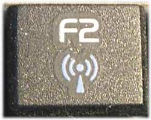
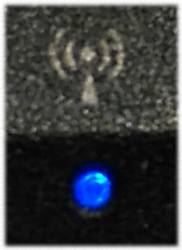
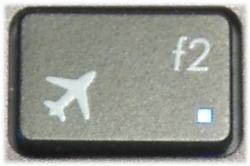
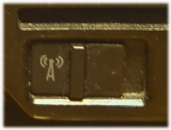

Airplane mode and rfkill
The closest that many get to the kernel's rfkill subsystem is when they press a button on their laptop (e.g. WiFi off, airplane mode) to save power, board a plane, or reduce interruptions. The plumbing to link that key press to a light that goes off, or maybe on, should be fairly straightforward but, as some recent patches show, there is still room for improvement. To understand the nature of these improvements, a little introduction to rfkill will be helpful.
The rfkill subsystem supports the creation of rfkill devices. When a
driver registers a device
capable of transmitting RF (e.g. WiFi or Bluetooth
adapters), it will also
register an rfkill device
associated with the transmitter. Each such device will have an index
number, a name such as "eeepc-wlan" or
"phy1", and two state flags: "hard
blocked" (RFKILL_STATE_HARD_BLOCKED) is read-only and is
expected to reflect some physical
disablement while "soft blocked"
(RFKILL_STATE_SOFT_BLOCKED) is read/write and can be used to
enable or disable transmission.

Each device also has a type (RFKILL_TYPE_*) from the list WLAN, BLUETOOTH, UWB (ultra-wideband), WIMAX, WWAN (wireless WAN), GPS, FM, and NFC. GPS is an interesting addition to the list as GPS transmitters are rare. GPS receivers do have powered antenna and powering these down is sometimes appropriate; that could be seen as fitting the role of rfkill.
For linking with an input key, the rfkill subsystem registers an
input handler that is automatically attached to any input
device that can report one of the keys KEY_WLAN,
KEY_BLUETOOTH, KEY_UWB, KEY_WIMAX,
or KEY_RFKILL — or one that can report a change to the
SW_RFKILL_ALL switch. The distinction between a key and a
switch is that a key reports an "off" event when
released, while a switch has two
equally stable states. The key events toggle an internal rfkill state and
cause all rfkill
devices of the
relevant type to be either blocked or unblocked, where
KEY_RFKILL applies to all types. The switch is a little more
heavy-handed as will be described later.

On the output side, each rfkill device registers an LED trigger that can be assigned to any LED that Linux controls. This assignment can be effected with a kernel driver, by using device tree (the "linux,default-trigger" attribute), or by writing to /sys/class/leds/$LED/trigger. There are usually a large number of triggers available, from simple states like "none" and "default-on" to the more complex "BAT0-charging-blink-full-solid" that might be registered by a battery controller. The "rfkillNN" trigger (where "NN" is the index number of the relevant rfkill) turns the LED on if transmission is not blocked, and off if it is either hard- or soft-blocked. This makes it suitable for an LED marked with a transmitter symbol, but not so suitable for one marked with an airplane: in that case one would expect the light to be on when transmission is blocked, rather than off.
This is where the patches from João Paulo Rechi Vita come in. Rechi Vita is putting together support for some new ASUS laptops and wanted to enable the LED next to the airplane symbol. To support this he created a new LED trigger called "rfkill-airplane-mode" that causes any associated LED to light up when in airplane mode. This might seem simple enough, but first you need to be sure you have a clear understanding of what airplane mode means, and agreement on whether the kernel should even know about such a thing.

To see what it could mean in the context of the rfkill subsystem, it is important to understand that there are some more soft-block flags beyond the one per device. The flags exist at three different levels. At the top level is a global flag. When it is toggled using the KEY_RFKILL key or set using, for example, "rfkill block all", all of the flags at all levels are set to match the new value of the global flag. The middle level has one flag for each type of rfkill device; one for WLAN, one for BLUETOOTH, etc. When these are toggled using a relevant key or set with a command like "rfkill unblock bluetooth", the soft flag for all devices of that type is set to match the new value of the per-type flag. The third level is the per-device soft-blocked flags that we have already met. When these are set, the corresponding per-type flag and the global flag are left unchanged, so the settings can become inconsistent. It is quite possible for a specific WLAN device to be unblocked while both the global setting and the mid-level WLAN setting are blocked. This could be achieved with commands like:
# rfkill block all
# rfkill block wlan
# rfkill unblock phy0
That understanding is enough to fill in the blanks concerning the SW_RFKILL_ALL switch. When that switch is activated all of the soft-block flags, per-device, per-type, and global, are set to "blocked" after first saving a copy of the per-type and global flags. While the switch is active none of the toggle keys will work, though settings can still be changed using the rfkill command-line tool. When the switch is deactivated, the toggle keys are re-enabled and the various flags can either be left unchanged, restored to their previous setting, or forced on, depending on the "master_switch_mode" module parameter.

Since both the SW_RFKILL_ALL switch and the
KEY_RFKILL key affect the global blocked flag, it makes some
sense for that value to drive the airplane-mode LED. Had Rechi Vita created a
trigger called "rfkill-all-inverted" that might have
been the end of the story. The proposed
"rfkill-airplane-mode" raised questions though.
Marcel Holtmann wondered
if the concept of airplane mode had any place in the kernel at all, since it
is really a regulatory concept rather than a technical concept, and it is
subject to change with place and time. Another concern, which seemed to be
implied but never quite stated, was that, since transmitters can be turned back
on individually without changing the global blocked status, it
wasn't clear that the global soft-blocked status meant anything more than
"the next toggle will turn everything back on", which is rather
indirect.
It was generally felt that these concerns were more theoretical than
practical and didn't need much attention. Providing that a user-space
daemon could implement a more nuanced behavior if it chose, the simple
answer is probably the best. A user-space daemon can always take complete
control of any LED by simply setting the trigger to
"none" and controlling the brightness directly, but
Rechi Vita provided something a little better. With his latest
patches, a daemon can take control of the airplane-mode setting and set it
explicitly the way it wants. It is fairly easy to receive notifications of
changes to rfkill devices, so any policy for the LED that can be imagined
can be implemented. Having this option removes the need for the daemon to
discover which LED it needs to control, and means that if the daemon dies
the behavior will revert to the default, which may not be perfect behavior,
but isn't that bad.
It is not immediately clear that these benefits justify giving the
kernel a concept of airplane mode — even a user-modifiable one. Restarting
daemons that die is a solved problem, so that aspect provides no real
benefit. Not needing to discover the appropriated LED is more interesting.
If a daemon wanted to discover input keys and switches that relate to RF
transmission, there are a well-defined set of event names that can be
searched for — you could probably even script something using evtest.
Discovering LEDs is not so easy. All that can be used is the names of the LEDs and, while these are supposed to be of the form "devicename:color:function", there is no standard list of functions. The mac80211 module uses "radio" for a function name, while the ASUS platform driver defines "asus::wlan". The Intel iwl driver defines LEDs with names like "phy0-led" which doesn't match the pattern at all. Rechi Vita has a separate patch that creates an LED called "asus-wireless::airplane_mode", which is pleasingly unambiguous, but only really helpful if other developers follow this lead. Teaching the kernel about airplane mode might not be the most elegant response to this lack of standardization, but it should work; Linux is nothing if not pragmatic.
Once these patches land, we will be a little closer to being able to
have a light that comes on in airplane mode. Only two steps remain
on my notebook: getting events when the airplane-mode key is
pressed, and being able to control the airplane-mode LED. This
functionality is often controlled through ACPI; the details seem
to vary unpredictably from model to model. Whether Rechi Vita's
other patches will help on a model which is a full six months old
is an open question.
| Index entries for this article | |
|---|---|
| Kernel | Networking/Wireless |
| GuestArticles | Brown, Neil |
Posted Mar 3, 2016 2:14 UTC (Thu)
by JdGordy (subscriber, #70103)
[Link]
Posted Mar 3, 2016 8:23 UTC (Thu)
by johill (subscriber, #25196)
[Link] (1 responses)
Posted Mar 4, 2016 0:02 UTC (Fri)
by neilbrown (subscriber, #359)
[Link]
http://thread.gmane.org/20160223204525.GC16961@amd
Both sides made valid points but neither added anything really new. Just a difference of opinion - hardly even a flamefest. Nothing that I thought particularly news-worthy.
Airplane mode and rfkill
Airplane mode and rfkill
Airplane mode and rfkill